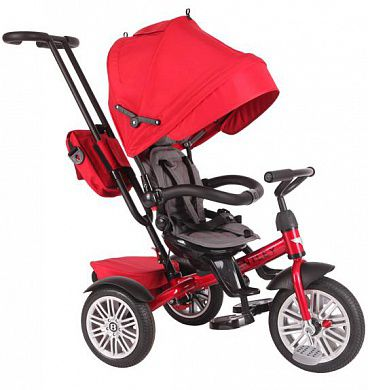

Магазин детских товаров Шкода-Мода
Детский веловипед Bentley Dragon Red

Краткое описание товара
Трехколесный детский велосипед с капюшоном и надувными колесами 10/12
Подробное описание товара
Детский трехколесный велосипед Bentley оснащен съемной родительской ручкой, потому может выступать и в качестве оригинальной замены коляски для детей старше полугода. В комплект входят велосипед, дождевик, корзина и сумка.
Для более удобного использования велосипед имеет несколько вариантов сборки. Он может использоваться как трехколесный велосипед и как коляска, в которой малыш может смотреть либо на родителей, либо на дорогу. При ненастной погоде к Bentley можно прикрепить дождевик, который защитить малыша от дождя или наоборот обезопасит от солнечных лучей. В сумку, входящую в комплект, можно поместить необходимые вещи, она крепится к ручке управления и не мешает контролю велосипедом или обзору. Также велосипед оснащен ремнем безопасности.
Сидение данного велосипеда может быть использовано в нескольких вариациях, оно вращающееся. Его можно настроить как для простого велосипеда, так и для перевозки маленького ребенка, для этого сидение оснащено специальными подставками для ножек. Также велосипед оснащен корзинкой, в которую малыш сможет сложить свои вещи и игрушки, необходимые ему на прогулке.
Характеристики товара
- Надувные колеса с протектором 12 и 10 дюймов для более мягкой езды
- Холостой ход переднего колеса обеспечивает безопасность движения
- Поворотное на 180 градусов эргономичное сиденье
- Дополнительные подножки (съемные) для самых маленьких пассажиров
- Наклонная спинка сиденья на 2 положения обеспечивает дополнительный комфорт
- Стояночный тормоз на задних колесах для безопасной стоянки
- Разъёмная/съемная дуга безопасности (с мягкой накладкой из эко-кожи с фирменной строчкой) обеспечивает безопасность при движении
- Складная крыша (на 2 сложения) со съемным козырьком. Крыша защищает от дождя, ветра и прямых солнечных лучей
- 5-точечный ремень безопасности обеспечивает безопасность ребенка при движении
- Съемная крыша
- Смотровое окошко (прозрачный пвх) позволяет следить за ребенком во время движения
- Фирменная вместительная сумочка с ремнем на ручке управления (съемная)
- Складные подножки
- Регулируемая по высоте в 2х положениях ручка управления (с мягкой накладкой из эко-кожи с фирменной строчкой)
- Съемный подголовник с мягкой накладкой
- Корзина с крышкой
Отличительные фирменные особенности марки
- Диски автомобиля Bentley Continental GT Speed
- Фирменные педали марки с антискользящими вставками
- Накладка из эко-кожи на руле, дуге безопасности и ручке управления
- Цвета рамы в точности соответствуют цвету реальных автомобилей Bentley Continental
- Дополнительный слой окраски рамы
- Металлический логотип
- Металлические заглушки на задних колесах с фирменной символикой
- Индивидуальная упаковка запчастей в фирменной коробке Bentley с пленкой для предотвращения повреждений при транспортировке
- Фирменная вместительная сумочка с ремнем на ручке управления может использоваться как отдельный аксессуар
Параметры:
- Возраст: от 6 месяцев
- Для мальчиков и девочек
- Цвет: красный
- Комплект: велосипед, дождевик, корзина, сумка.
- Допустимый вес эксплуатации: 30 кг.
- Рекомендуемый рост: 70-110 см
- Упаковка: картонная коробка.
- Размер велосипеда: 83×50.5×105.5 см.
- Диаметр переднего колеса: 30 см.
- Диаметр заднего колеса: 25 см.
- Вес: 12.8 кг.